| 日付 | 2012年6月24日（日） |
|---|---|
| 山域 | 日光周辺 |
| メンバー | 家族（妻、長女・1歳） |
| 山行形態 | 子連れ日帰り |
| アクセス | 車 |
| ルート (Map) | 菅沼登山口 (8:38) - (10:12) 弥陀ヶ池 - (11:11) 日光白根山 (11:59) - (12:53) 五色沼 (13:02) - (13:47) 五色山 - (14:31) 金精山 (14:42) - (15:49) 菅沼登山口 |
奥日光に聳える日光白根山は関東地方の最高峰だ。
標高は高いが、比較的容易に登れる山のため、
多くの登山者に親しまれている人気の山である。
登山道はたくさんあるが、今回は北の菅沼を起点にした
周回ルートを歩くことにする。
菅沼登山口に到着。標高1735m。
駐車場はすでにいっぱいで、ほとんど車を停める場所がない。山は大盛況のようだ。
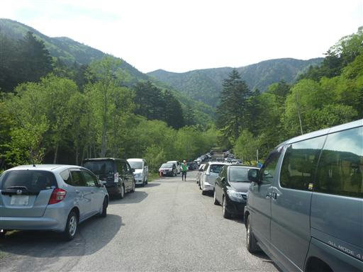
白根山登山口の立派な標識がある。
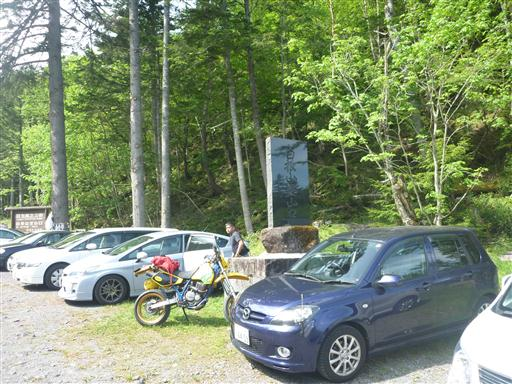
しばらくは平坦な道を歩く。辺りは美しい草原が広がっている。
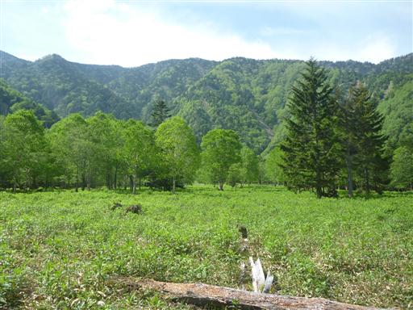
転げ落ちそうな石につっかえ棒がたくさん置かれている。

展望の良い日光白根山だが、登り始めは樹林帯の中で
なかなか展望は得られない。
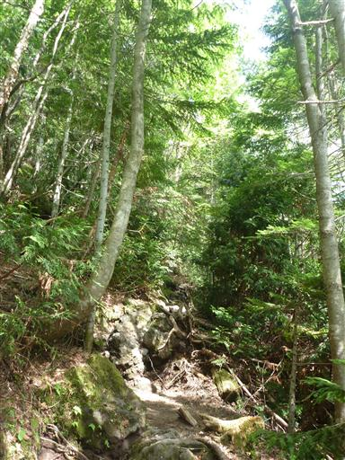
途中、所々で展望が広がるところがある。奥日光の山深い森が広がっている。
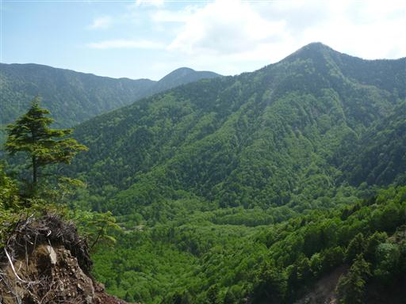
弥陀ヶ池に到着。ここで日光白根山の溶岩ドームが姿を現す。
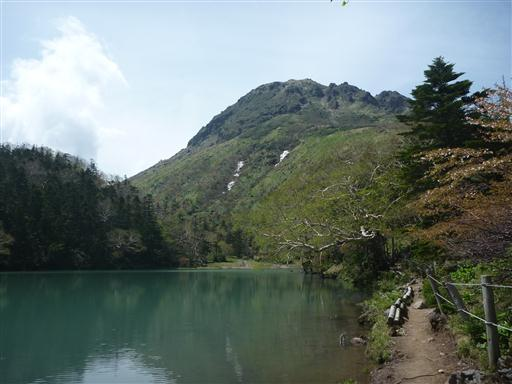
この辺りにはシラネアオイが咲いている。シラネアオイは1属1種の日本固有種である。
日光白根山で良く見られることからシラネアオイと名付けられたのだが、
近年、シカの食害によってほとんど絶滅してしまったらしい。
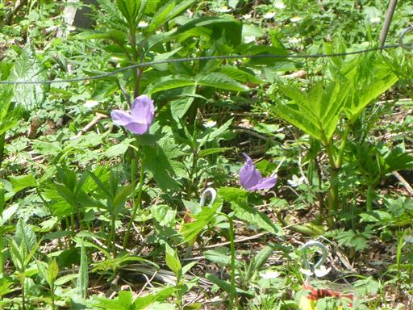
ここは厳重な電気柵に囲まれており、その部分だけシラネアオイが咲いている。
電気柵が遠いので、シラネアオイを間近で見ることはできなかった。
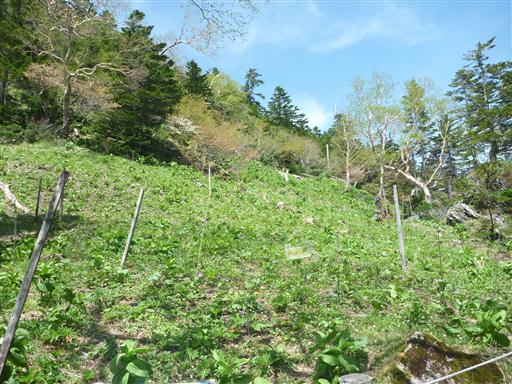
大きな瘤を持った木が立っている。
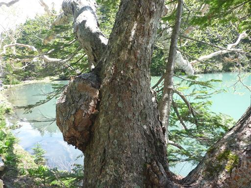
弥陀ヶ池の脇にある木道を歩いていく。
風景の良い場所なので、この辺りは人影が多い。
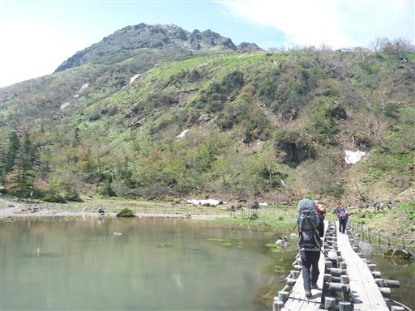
弥陀ヶ池の畔で一休み。岸辺にわずかに残った陸地になぜかロープが張られている。
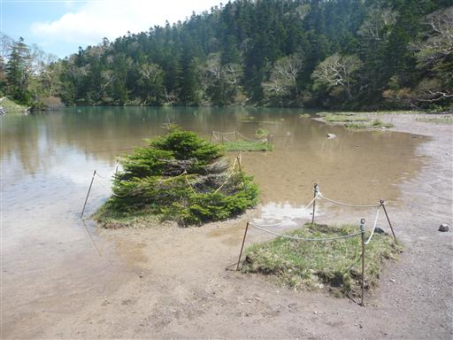
少しの休憩の後、重い荷物を背負って日光白根山の山頂部に向けて歩き始める。
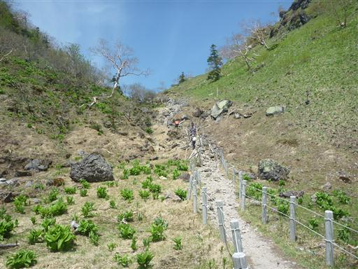
この辺りは寝ている木が多い。雪の重みの影響だろう。
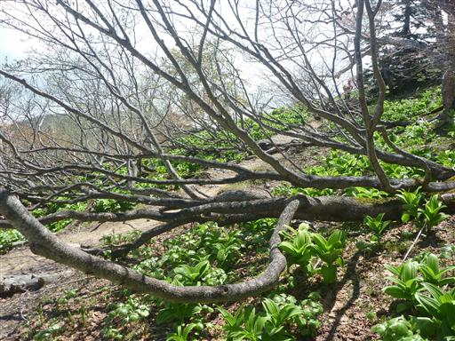
山頂部が見えてきた辺りで足が完全に止まってしまう。
いくら荷物が重いとはいえ、たいした標高差を登っていないはずなのだが…
おにぎりを食べて体力は少し回復。遥かな高みにある山頂に向かってゆっくりゆっくり登っていく。
それでも追い抜いていく人は意外なほど少ない。
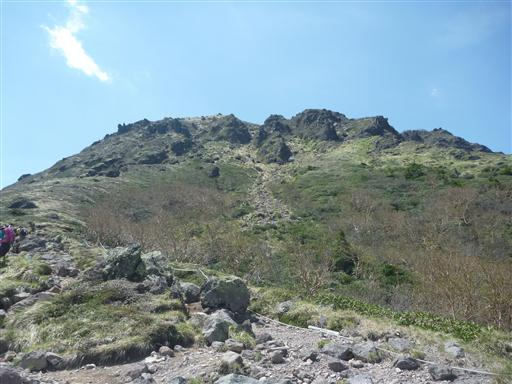
登山道からは素晴らしい展望が広がる。
遠くには燧ヶ岳を始め東北の山々、足元には弥陀ヶ池、菅沼、丸沼が見えている。
この辺りで友人と偶然出会う。有名な山に登るとこういった出会いがある。
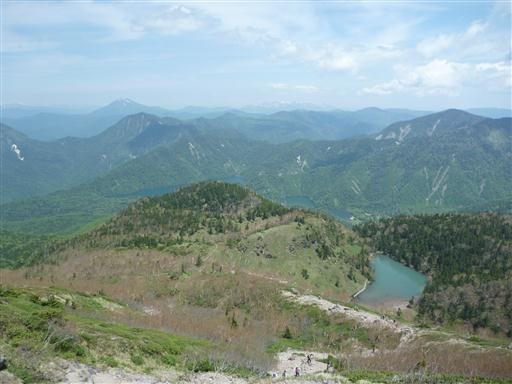
火山のため山頂付近は荒々しい風景が広がる。
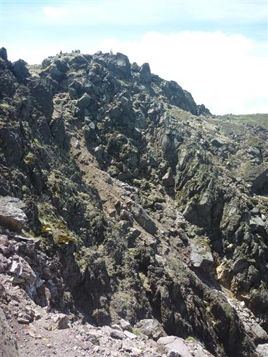
山頂の一角に到着。目の前の岩峰が最高地点のようで、人影がたくさん見える。
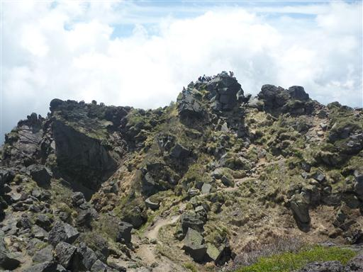
日光白根山山頂に到着。標高2578m。
バテてたわりには、それなりのタイムで到着できた。
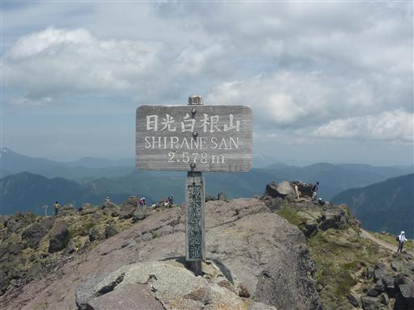
山頂から錫ヶ岳方面を望む。日光白根山から錫ヶ岳を経由して皇海山まで
歩く計画を立てたこともあったが、もう歩く機会はないかもしれない。
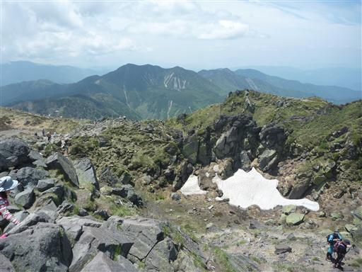
山頂は大勢の登山者でごった返している。
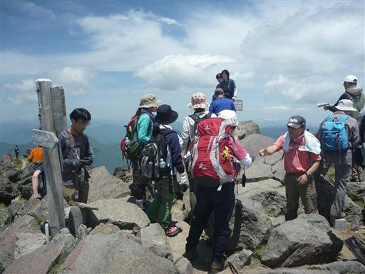
ものすごい人出だが、山頂周辺が比較的広いため、
山頂標識付近を除けば大混雑というほどではない。
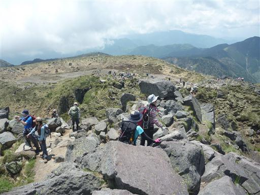
展望の良い場所は風が冷たかったので、山頂直下の大岩の麓に腰をおろして昼食をとることにする。
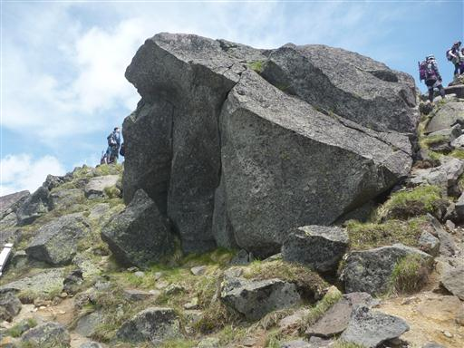
昼食をとったら下山開始。山頂の一角には神社が祀られている。
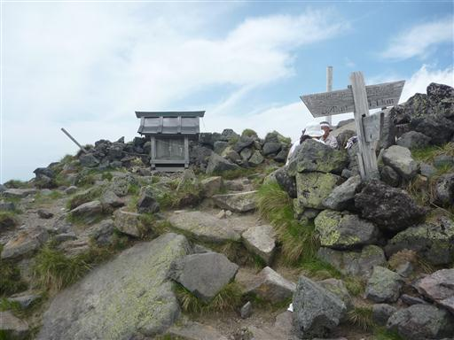
噴火口跡らしきものがある。
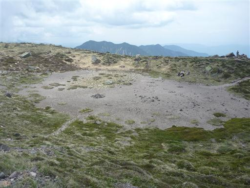
溝になっている部分にはまだ豊富に残雪が残っている。
ここで山頂の風景は見納め。五色沼に向かって下って行く。
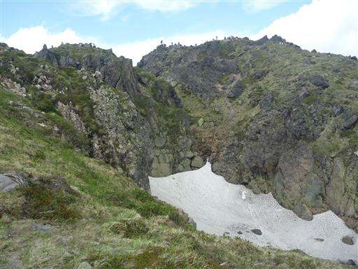
この辺りは砂礫地だ。滑りやすい斜面をジグザグに下って行く。
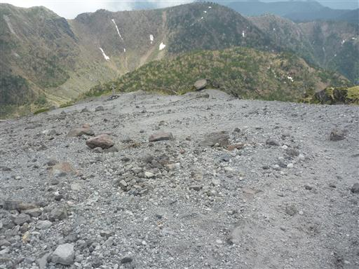
眼下に五色沼が見えてきた。
吾妻山にあった五色沼も美しかったが、こちらの五色沼も美しい。
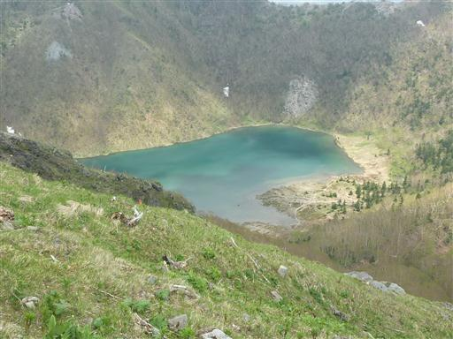
標高を落とすと辺りはダケカンバ林になる。
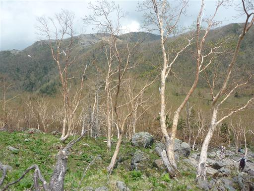
谷あいの平地にたどり着く。五色沼はもうすぐそこだ。
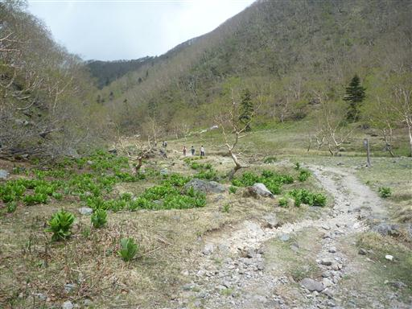
桜の花が咲いている。ソメイヨシノも良いが野生の桜も美しい。
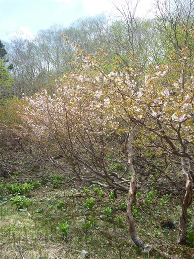
避難小屋に到着。中を覗くとそこそこきれいだった。
この小屋はトイレがないことが欠点で、五色沼の水質汚染が心配されているらしい。
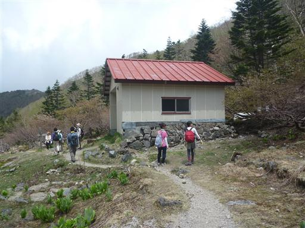
道端にシカを発見。登山者が大勢いても全く気にする様子はない。
シカはバイケイソウを食べないため、この辺りはバイケイソウがやたら多い。
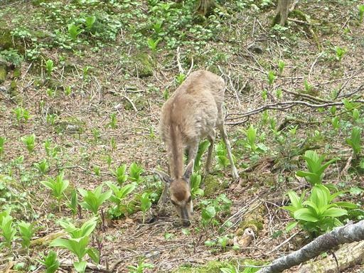
五色沼に到着。畔では多くの人が腰をおろして休憩している。
水場の標識があったので念のため水の補給を行おうと思ったら、
親切な人が、ここから水場は遠いと教えてくれて、余っている水を分けてくれた。感謝だ。
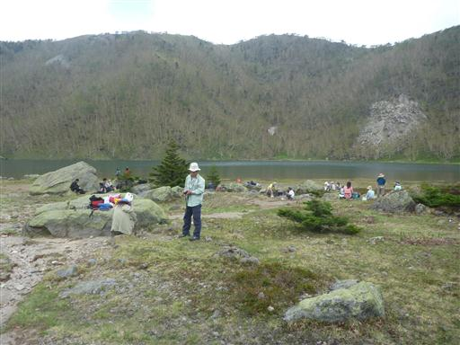
五色沼から望む日光白根山も立派だ。
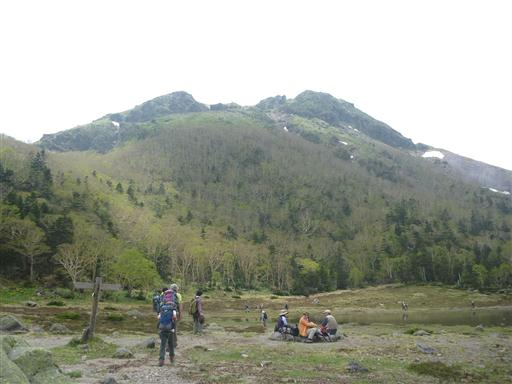
ここから弥陀ヶ池経由で下山するのが楽なのだが、
少し足を延ばして五色山から金精山を経由することにする。
ここまで歩いた後に、さらに200mを登るのは少々辛い。
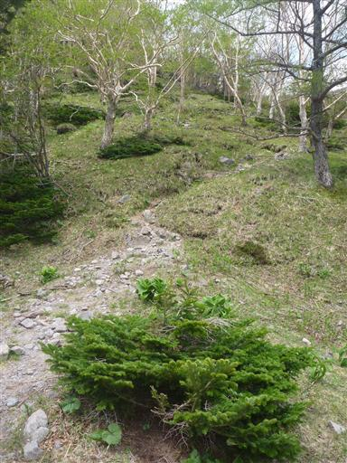
五色沼から離れて、五色沼を取り囲む尾根に登っていく。
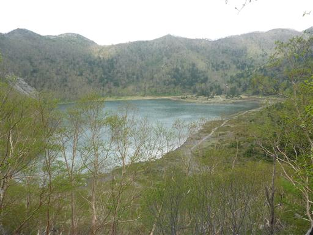
足元には黄色い花がたくさん咲いている。
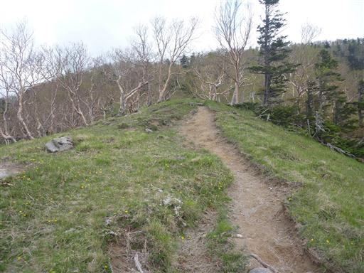
笹原の道を歩いていく。展望の良い尾根道で気持ちの良いところだ。
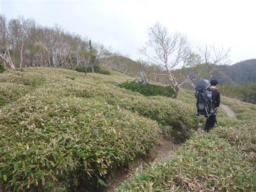
放射状に広がる美しい木。この辺りは変わった形の木が多い。
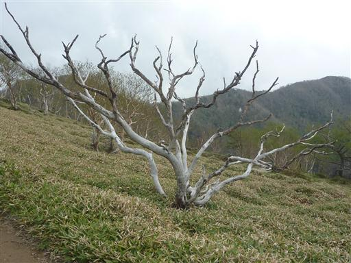
五色山山頂に到着。主要登山道からは外れているため、人影はまばらだ。
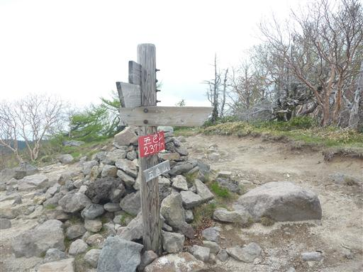
五色山から五色沼と日光白根山を望む。立派な山容だ。
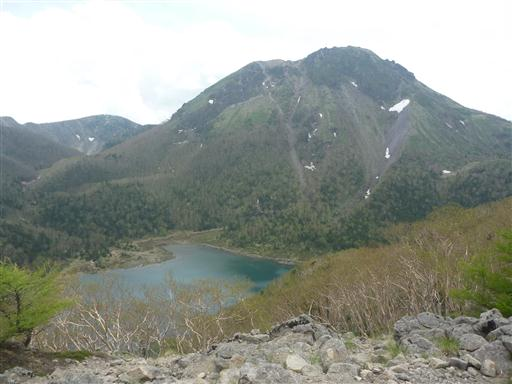
ここから金精山に向けて北上する。
左の群馬側は晴れているが、右の栃木側は雲が出て展望がない。
天気予報は群馬が晴、栃木が曇。日光白根山は群馬と栃木の県境にあるため、
どちらの天気になるか少々不安だったが、完璧に天気予報通りの結果になるとは…
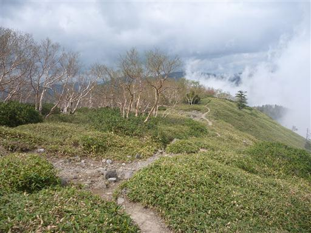
この尾根道には、ところどころに残雪が残っている。

ミツバオウレンの花が群生している。
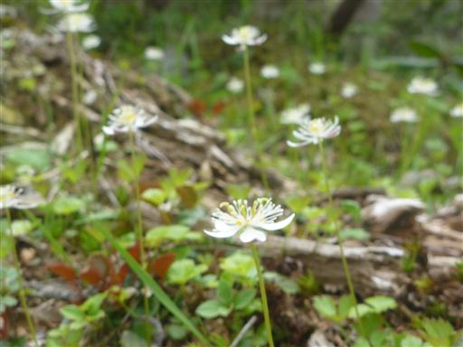
金精山山頂に到着。標高2244m。
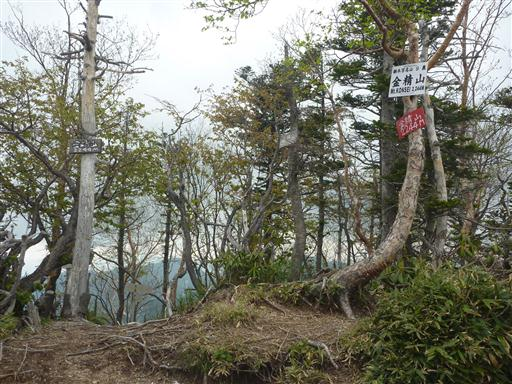
山頂にいる人の話では、ここから表日光の素晴らしい展望が広がるらしいが、今は全て雲の中だ。
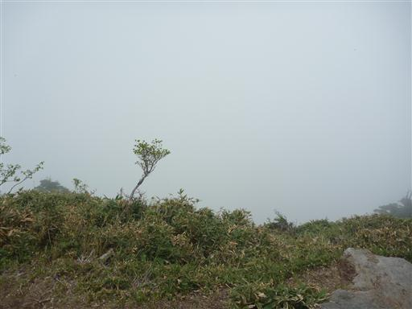
あとは登山口まで下るのみ。金精峠に向けて下り始める。
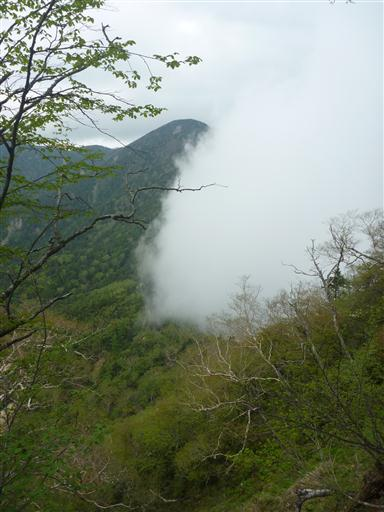
この下山道は急傾斜だ。使い物にならない梯子の脇を下って行く。
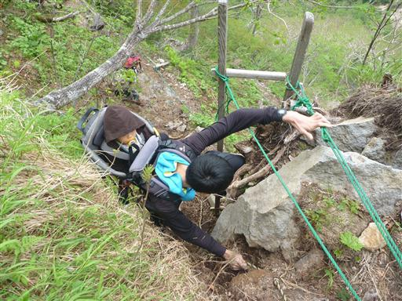
梯子を見上げる。今にも倒れてきそうだ。
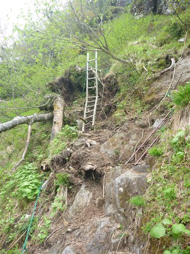
登山道の周りにシャクナゲの花が目立ち始める。
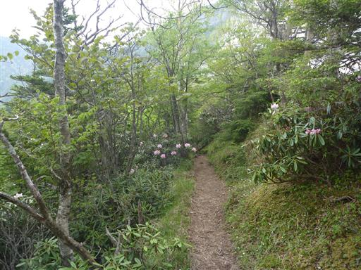
あちらこちらにシャクナゲの花が咲いている。これだけ群生して咲くと見ごたえがある。
金精峠に到着。このまままっすぐ行くと温泉ヶ岳に通じている。
峠には金精神社がある。子宝、安産に霊験があるらしい。
ここからの下山道は一定の傾斜の歩きやすい道が続く。
林床はカニコウモリの葉が敷き詰められている。
車道と合流。車道を少し歩くと駐車場に到着する。
少々人は多かったが、素晴らしい展望を満喫できた山だった。
帰りの道中に吹割渓谷に立ち寄ることにする。美しい吹割の滝があることで名高い。
階段を下りて河畔に出てくる。この辺りの川幅は非常に広い。
観光地のため道は完全に整備されている。
吹割の滝が見えてきた。
吹割の滝。三方から水が流れ落ちる姿から東洋のナイアガラとも呼ばれているらしい。
滝の下流は激流になっている。
河畔には不思議な形の岩壁が続いている。
遊歩道はその先の鱒飛の滝まで続いている。
この辺りは淵となっていて流れが穏やかだ。
鱒飛の滝。水は再び激流となる。
美しい渓谷が続いているが、遊歩道はここまで。
噂に違わぬ美しい渓谷だった。